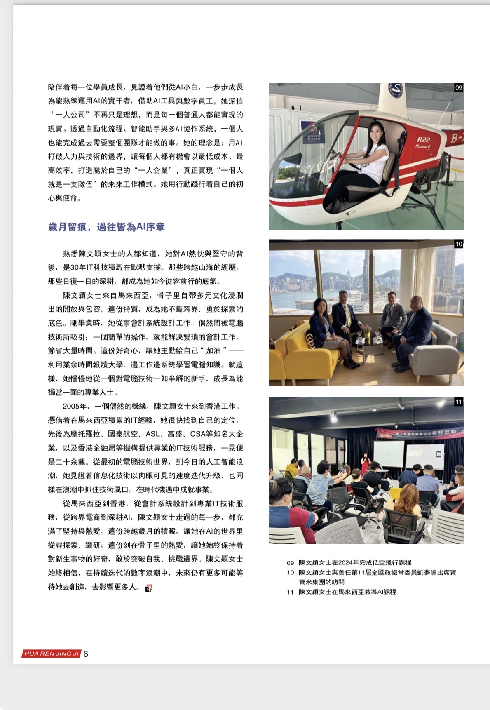
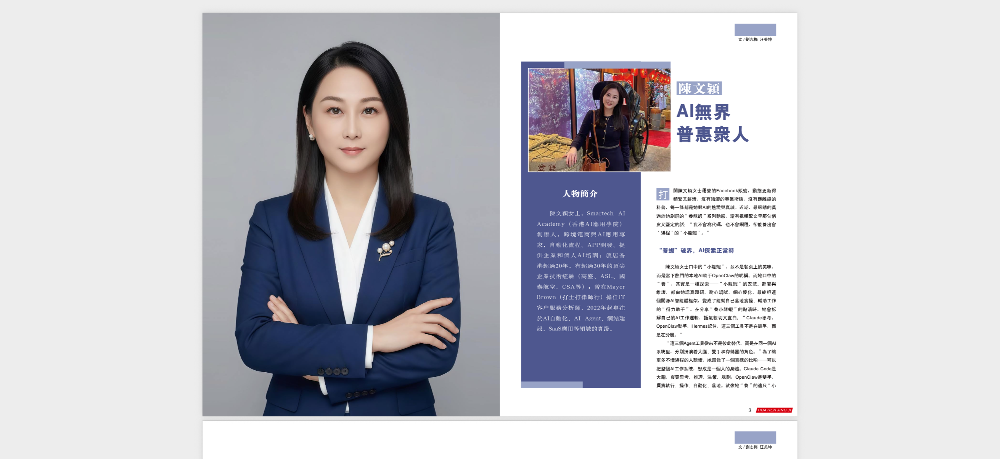
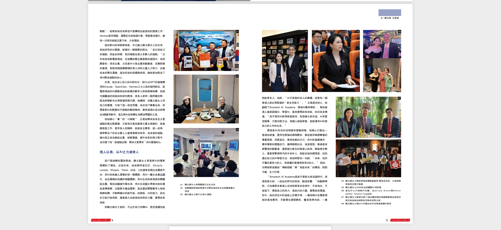
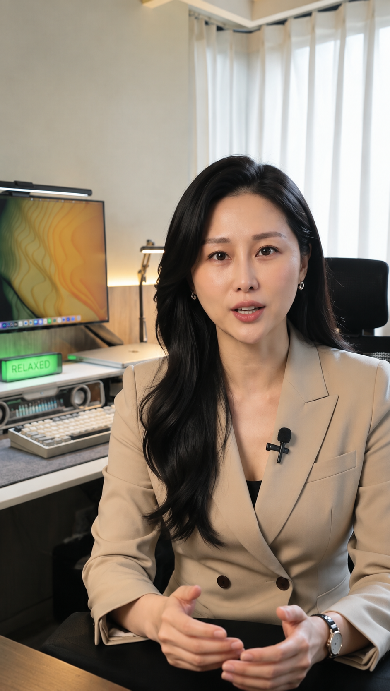

THE PERSON BEHIND THE PRACTICE
认识 Fion，
把 AI 用进真实人生。
AI 不会取代你的经验，它会放大你已经拥有的价值。
陳文颖 Fion 是 AI 资深导师，拥有 28 年电脑科技技术经验。曾在高勝、國泰航空、孖士打大律師行、ASL 等香港大型企业任职，并是 Smartech AI 有限公司的发起人，曾培训超过 100 位学生。
和 Fion 开始对话 ↗FION TAN
AI EDUCATOR · BUSINESS AI MENTOR
AI EDUCATOR · BUSINESS AI MENTOR
A PRACTICAL APPROACH TO AI
不只是教工具，
而是教你开始。
从超级个体、自动化工作流、智能体到网站制作，Fion 以实战经验帮助企业与个人把 AI 真正用进工作、表达与生活。
她擅长四文三语与跨文化沟通，善长外交关系，把复杂的 AI 拆成容易理解的路径，让普通人也能用 AI 建立个人 IP、打造一人公司，并用内容实现持续收入。
01AI 教育与培训让个人与团队建立可持续的 AI 工作习惯。
02个人品牌与内容把经验整理成有方向、有温度的影响力。
03企业 AI 转型把 AI 放进管理、营销、销售与知识流程。
FEATURED INTERVIEW
让专业被看见，
也让经验被理解。
在杂志访问与公开分享中，Fion 持续谈论 AI 如何帮助专业人士更清楚地表达自己、建立影响力，并把想法变成实际行动。



FROM KNOWLEDGE TO ACTION
学习、创作、
发布、成长。
